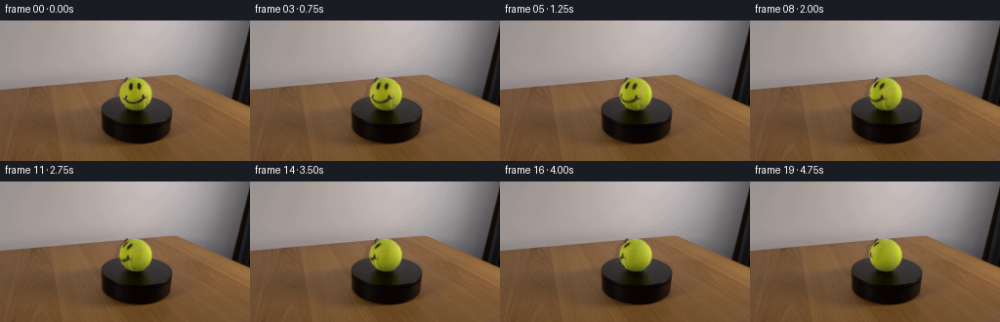
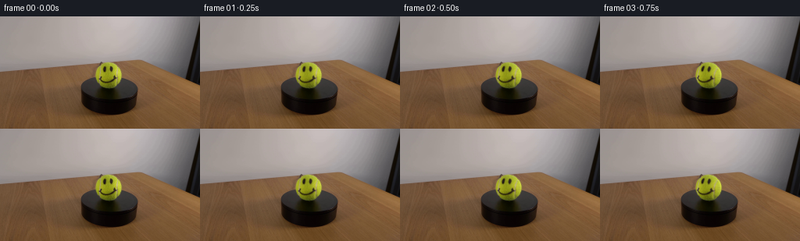
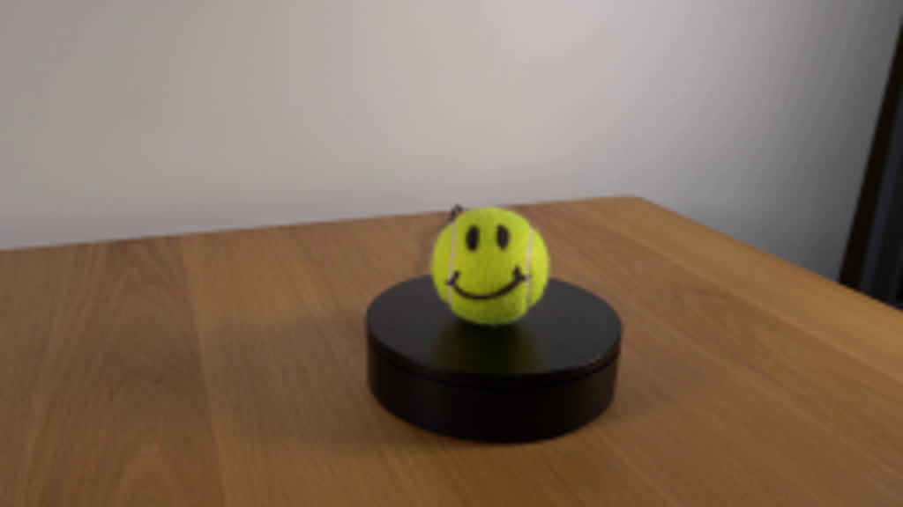
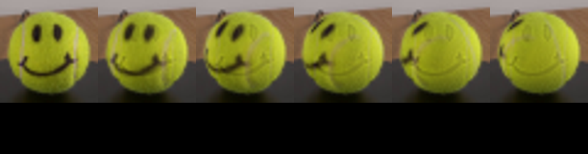
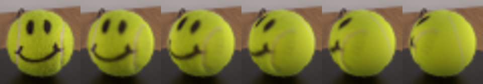
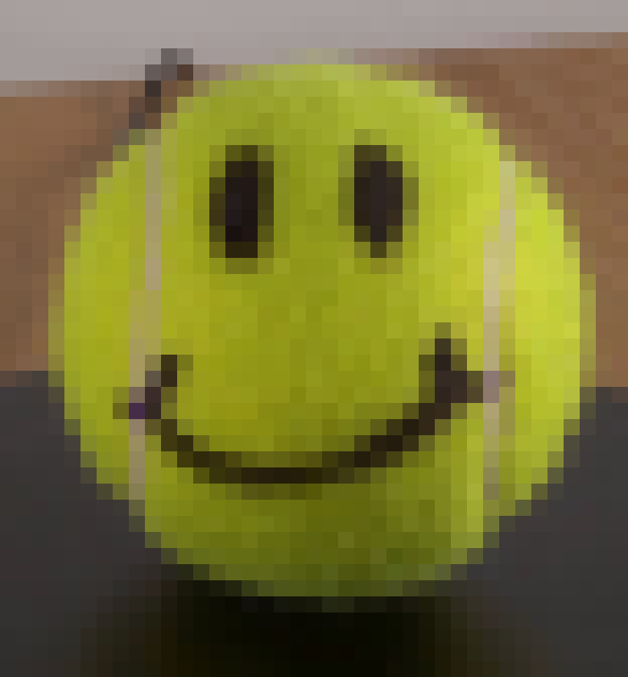

CODING AGENTS AS PIXEL WORLD MODELS
traex/GPT-6.1-Sol · 0166
点击播放 · 原生 RGB 像素
逐轮保存的候选
回放视频、检查图与代码变化。
每份候选均可单独播放。实际图片检查记录在下方工具轨迹中。
候选 01播放与检查图
点击播放 · 原生 RGB 像素

展开代码变化
--- 上一保存版本
+++ 本次保存版本
@@ -0,0 +1,90 @@
+from pathlib import Path
+import numpy as np
+from PIL import Image
+import cv2
+from scipy.ndimage import gaussian_filter, map_coordinates, distance_transform_edt
+from artifact_io import save
+
+ROOT=Path(__file__).resolve().parent
+im=np.asarray(Image.open(ROOT/'first_frame.png').convert('RGB'),dtype=np.float64)
+H,W=im.shape[:2]
+Y,X=np.mgrid[:H,:W]
+cx,cy=138.7,75.3
+rx,ry=16.65,16.9
+u=(X-cx)/rx; v=(Y-cy)/ry
+r2=u*u+v*v
+# Recover the yellow felt's smooth, fixed illumination independently of its ink.
+features=[np.ones_like(u),u,v,u*u,u*v,v*v,u**3,u*u*v,u*v*v,v**3]
+F=np.stack(features,axis=-1)
+clean=(r2<.88)&(im[:,:,1]>78)&(im[:,:,2]<.32*im[:,:,1])&(im[:,:,0]>.88*im[:,:,1])
+clean &= ~(((X>130)&(X<137)&(Y>63)&(Y<73))|((X>139)&(X<145)&(Y>62)&(Y<73)))
+clean &= ~((X>125)&(X<150)&(Y>75)&(Y<87))
+coef=np.linalg.lstsq(F[clean],im[clean],rcond=None)[0]
+base=np.clip(F@coef,8,230)
+ratio=im/np.maximum(base,10)
+# Restrict recovered material to the ball, extending the felt to the limb.
+valid=(r2<.93**2)
+_,inds=distance_transform_edt(~valid,return_indices=True)
+ratio[~valid]=ratio[inds[0][~valid],inds[1][~valid]]
+ratio=np.clip(ratio,.05,4.0)
+# Supersampling for the rotating spherical texture rather than rotating a flat sticker.
+S=4
+xh=(np.arange(114*S,164*S)+.5)/S-.5
+yh=(np.arange(52*S,99*S)+.5)/S-.5
+XX,YY=np.meshgrid(xh,yh)
+U=(XX-cx)/rx; VV=(YY-cy)/ry
+rr=U*U+VV*VV
+D=np.sqrt(np.maximum(0,1-rr))
+elev=np.deg2rad(22)
+normal_x=U
+normal_y=-VV*np.cos(elev)+D*np.sin(elev)
+normal_z=VV*np.sin(elev)+D*np.cos(elev)
+BH=np.stack([map_coordinates(base[:,:,k],[YY,XX],order=1,mode='nearest') for k in range(3)],-1)
+# Same softness as the photographic outline.
+edge=np.clip((1-np.sqrt(rr))*rx+.15,0,1)
+# Fade source interpolation close to the original limb where the photograph contains the table.
+rng=np.random.default_rng(4)
+felt=gaussian_filter(rng.normal(size=(256,512)),.5)*.025
+
+def render_material(angle):
+ c,s=np.cos(angle),np.sin(angle)
+ nx=c*normal_x+s*normal_z
+ ny=normal_y
+ nz=-s*normal_x+c*normal_z
+ depth=ny*np.sin(elev)+nz*np.cos(elev)
+ sy=-(ny*np.cos(elev)-nz*np.sin(elev))
+ sx=nx
+ mx=cx+rx*sx; my=cy+ry*sy
+ tex=np.stack([map_coordinates(ratio[:,:,k],[my,mx],order=1,mode='nearest') for k in range(3)],-1)
+ # Unobserved hemisphere continues as yellow-green fuzzy felt.
+ lon=np.arctan2(nx,nz)
+ lat=np.arcsin(np.clip(ny,-1,1))
+ grain=map_coordinates(felt,[(lat/np.pi+.5)*255,(lon/(2*np.pi)+.5)*511],order=1,mode='wrap')
+ unseen=np.ones_like(tex)*(1+grain[:,:,None])
+ # The two continuous rounded seams on a tennis ball, including the far side.
+ seamlon=.77+.11*np.sin(2*lat+.2)
+ # Back panel's matching curved seam. It only becomes visible during rotation.
+ seam_dist=np.minimum(np.abs(lon-(np.pi-seamlon)),np.abs(lon-(-np.pi+seamlon)))
+ seam_width=.033/np.maximum(.35,np.cos(lat))
+ seam_alpha=np.exp(-.5*(seam_dist/seam_width)**2)*.65
+ seam_color=np.array([.99,.92,2.6])
+ unseen=unseen*(1-seam_alpha[:,:,None])+seam_color[None,None,:]*seam_alpha[:,:,None]
+ weight=np.clip((depth-.16)/.16,0,1)
+ weight=weight*weight*(3-2*weight)
+ return BH*(tex*weight[:,:,None]+unseen*(1-weight[:,:,None]))
+
+original_hr=np.stack([map_coordinates(im[:,:,k],[YY,XX],order=1,mode='nearest') for k in range(3)],-1)
+initial=render_material(0)
+# Differential compositing preserves the original photograph and all stationary details.
+frames=[im.astype(np.uint8)]
+for i in range(1,20):
+ angle=np.deg2rad(100)*i/19
+ current=render_material(angle)
+ delta=(current-initial)*edge[:,:,None]
+ delta=cv2.resize(delta,(50,47),interpolation=cv2.INTER_AREA)
+ out=im.copy()
+ out[52:99,114:164]+=delta
+ frames.append(np.clip(np.round(out),0,255).astype(np.uint8))
+frames=np.stack(frames)
+save(frames,ROOT)
+Image.fromarray(np.clip(base,0,255).astype(np.uint8)).save(ROOT/'.tmp/base.png')
候选 02播放与检查图
点击播放 · 原生 RGB 像素

展开代码变化
--- 上一保存版本
+++ 本次保存版本
@@ -75,6 +75,9 @@
original_hr=np.stack([map_coordinates(im[:,:,k],[YY,XX],order=1,mode='nearest') for k in range(3)],-1)
initial=render_material(0)
+initial_lr=cv2.resize(initial,(50,47),interpolation=cv2.INTER_AREA)
+inner=np.clip((1-np.sqrt(rr))*rx-0.6,0,1)
+inner_lr=cv2.resize(inner,(50,47),interpolation=cv2.INTER_AREA)
# Differential compositing preserves the original photograph and all stationary details.
frames=[im.astype(np.uint8)]
for i in range(1,20):
@@ -83,7 +86,7 @@
delta=(current-initial)*edge[:,:,None]
delta=cv2.resize(delta,(50,47),interpolation=cv2.INTER_AREA)
out=im.copy()
- out[52:99,114:164]+=delta
+ out[52:99,114:164]+=delta+(initial_lr-im[52:99,114:164])*inner_lr[:,:,None]
frames.append(np.clip(np.round(out),0,255).astype(np.uint8))
frames=np.stack(frames)
save(frames,ROOT)
候选 03播放与检查图
点击播放 · 原生 RGB 像素

展开代码变化
--- 上一保存版本
+++ 本次保存版本
@@ -44,7 +44,9 @@
edge=np.clip((1-np.sqrt(rr))*rx+.15,0,1)
# Fade source interpolation close to the original limb where the photograph contains the table.
rng=np.random.default_rng(4)
-felt=gaussian_filter(rng.normal(size=(256,512)),.5)*.025
+felt=gaussian_filter(rng.normal(size=(64,128)),.55)*.035
+felt=cv2.resize(felt,(512,256),interpolation=cv2.INTER_CUBIC)
+felt+=gaussian_filter(rng.normal(size=(256,512)),.5)*.016
def render_material(angle):
c,s=np.cos(angle),np.sin(angle)
@@ -55,7 +57,7 @@
sy=-(ny*np.cos(elev)-nz*np.sin(elev))
sx=nx
mx=cx+rx*sx; my=cy+ry*sy
- tex=np.stack([map_coordinates(ratio[:,:,k],[my,mx],order=1,mode='nearest') for k in range(3)],-1)
+ tex=np.stack([map_coordinates(ratio[:,:,k],[my,mx],order=3,mode='nearest') for k in range(3)],-1)
# Unobserved hemisphere continues as yellow-green fuzzy felt.
lon=np.arctan2(nx,nz)
lat=np.arcsin(np.clip(ny,-1,1))
可观测工具轨迹
实际执行的命令与返回图片。
命令 1exit 0
/bin/bash -lc 'ls -la && cat prompt.txt && cat GENERATION_RULES.md'
命令 2exit 0
/bin/bash -lc "cat artifact_io.py && python - <<'PY'
from PIL import Image
im=Image.open('first_frame.png'); print(im.size); im.resize((1024,576)).save('.tmp/large.png')
PY"命令 3exit 0
/bin/bash -lc "python - <<'PY'
from PIL import Image
im=Image.open('first_frame.png'); im.crop((115,52,163,101)).resize((576,588)).save('.tmp/ball.png')
PY"命令 4exit 0
/bin/bash -lc "python - <<'PY'
import numpy as np
from PIL import Image
im=np.asarray(Image.open('first_frame.png')).astype(float)
for y in range(56,95):
inds=np.where((im[y,:,1]>im[y,:,0]*1.0)&(im[y,:,1]>im[y,:,2]*1.7)&(im[y,:,1]>70))[0];inds=inds[(inds>118)&(inds<161)]
if len(inds):print(y,inds[0],inds[-1])
PY"命令 5exit 0
/bin/bash -lc "python - <<'PY' import importlib.util for x in ['cv2','scipy','numpy','PIL']:print(x, bool(importlib.util.find_spec(x))) PY"
命令 6exit 0
/bin/bash -lc "python - <<'PY'
from PIL import Image
im=Image.open('first_frame.png'); im.crop((119,55,158,97)).resize((780,840),Image.Resampling.NEAREST).save('.tmp/pixels.png')
PY"命令 7exit 0
/bin/bash -lc "python - <<'PY'
from PIL import Image
import numpy as np
im=np.asarray(Image.open('first_frame.png'))
for y in [63,66,70,75,80,85,89]:
print(y,[(x,im[y,x].tolist()) for x in range(123,155)])
PY"命令 8exit 0
/bin/bash -lc "cat > generate.py <<'PY'
from pathlib import Path
import numpy as np
from PIL import Image
import cv2
from scipy.ndimage import gaussian_filter, map_coordinates, distance_transform_edt
from artifact_io import save
ROOT=Path(__file__).resolve().parent
im=np.asarray(Image.open(ROOT/'first_frame.png').convert('RGB'),dtype=np.float64)
H,W=im.shape[:2]
Y,X=np.mgrid[:H,:W]
cx,cy=138.7,75.3
rx,ry=16.65,16.9
u=(X-cx)/rx; v=(Y-cy)/ry
r2=u*u+v*v
# Recover the yellow felt's smooth, fixed illumination independently of its ink.
features=[np.ones_like(u),u,v,u*u,u*v,v*v,u**3,u*u*v,u*v*v,v**3]
F=np.stack(features,axis=-1)
clean=(r2<.88)&(im[:,:,1]>78)&(im[:,:,2]<.32*im[:,:,1])&(im[:,:,0]>.88*im[:,:,1])
clean &= ~(((X>130)&(X<137)&(Y>63)&(Y<73))|((X>139)&(X<145)&(Y>62)&(Y<73)))
clean &= ~((X>125)&(X<150)&(Y>75)&(Y<87))
coef=np.linalg.lstsq(F[clean],im[clean],rcond=None)[0]
base=np.clip(F@coef,8,230)
ratio=im/np.maximum(base,10)
# Restrict recovered material to the ball, extending the felt to the limb.
valid=(r2<.93**2)
_,inds=distance_transform_edt(~valid,return_indices=True)
ratio[~valid]=ratio[inds[0][~valid],inds[1][~valid]]
ratio=np.clip(ratio,.05,4.0)
# Supersampling for the rotating spherical texture rather than rotating a flat sticker.
S=4
xh=(np.arange(114*S,164*S)+.5)/S-.5
yh=(np.arange(52*S,99*S)+.5)/S-.5
XX,YY=np.meshgrid(xh,yh)
U=(XX-cx)/rx; VV=(YY-cy)/ry
rr=U*U+VV*VV
D=np.sqrt(np.maximum(0,1-rr))
elev=np.deg2rad(22)
normal_x=U
normal_y=-VV*np.cos(elev)+D*np.sin(elev)
normal_z=VV*np.sin(elev)+D*np.cos(elev)
BH=np.stack([map_coordinates(base[:,:,k],[YY,XX],order=1,mode='nearest') for k in range(3)],-1)
# Same softness as the photographic outline.
edge=np.clip((1-np.sqrt(rr))*rx+.15,0,1)
# Fade source interpolation close to the original limb where the photograph contains the table.
rng=np.random.default_rng(4)
felt=gaussian_filter(rng.normal(size=(256,512)),.5)*.025
def render_material(angle):
c,s=np.cos(angle),np.sin(angle)
nx=c*normal_x+s*normal_z
ny=normal_y
nz=-s*normal_x+c*normal_z
depth=ny*np.sin(elev)+nz*np.cos(elev)
sy=-(ny*np.cos(elev)-nz*np.sin(elev))
sx=nx
mx=cx+rx*sx; my=cy+ry*sy
tex=np.stack([map_coordinates(ratio[:,:,k],[my,mx],order=1,mode='nearest') for k in range(3)],-1)
# Unobserved hemisphere continues as yellow-green fuzzy felt.
lon=np.arctan2(nx,nz)
lat=np.arcsin(np.clip(ny,-1,1))
grain=map_coordinates(felt,[(lat/np.pi+.5)*255,(lon/(2*np.pi)+.5)*511],order=1,mode='wrap')
unseen=np.ones_like(tex)*(1+grain[:,:,None])
# The two continuous rounded seams on a tennis ball, including the far side.
seamlon=.77+.11*np.sin(2*lat+.2)
# Back panel's matching curved seam. It only becomes visible during rotation.
seam_dist=np.minimum(np.abs(lon-(np.pi-seamlon)),np.abs(lon-(-np.pi+seamlon)))
seam_width=.033/np.maximum(.35,np.cos(lat))
seam_alpha=np.exp(-.5*(seam_dist/seam_width)**2)*.65
seam_color=np.array([.99,.92,2.6])
unseen=unseen*(1-seam_alpha[:,:,None])+seam_color[None,None,:]*seam_alpha[:,:,None]
weight=np.clip((depth-.16)/.16,0,1)
weight=weight*weight*(3-2*weight)
return BH*(tex*weight[:,:,None]+unseen*(1-weight[:,:,None]))
original_hr=np.stack([map_coordinates(im[:,:,k],[YY,XX],order=1,mode='nearest') for k in range(3)],-1)
initial=render_material(0)
# Differential compositing preserves the original photograph and all stationary details.
frames=[im.astype(np.uint8)]
for i in range(1,20):
angle=np.deg2rad(100)*i/19
current=render_material(angle)
delta=(current-initial)*edge[:,:,None]
delta=cv2.resize(delta,(50,47),interpolation=cv2.INTER_AREA)
out=im.copy()
out[52:99,114:164]+=delta
frames.append(np.clip(np.round(out),0,255).astype(np.uint8))
frames=np.stack(frames)
save(frames,ROOT)
Image.fromarray(np.clip(base,0,255).astype(np.uint8)).save(ROOT/'.tmp/base.png')
PY
python generate.py"命令 9exit 0
/bin/bash -lc "python - <<'PY'
from PIL import Image,ImageDraw
s=Image.new('RGB',(960,252))
for k,i in enumerate([0,3,7,11,15,19]):
im=Image.open(f'frames/{i:02}.png');im=im.crop((119,54,159,96)).resize((160,168))
s.paste(im,(k*160,0))
s.save('.tmp/sequence.png')
PY"命令 10exit 0
/bin/bash -lc "python - <<'PY'
p='generate.py'
s=open(p).read().replace(\"initial=render_material(0)\\n\", \"initial=render_material(0)\\ninitial_lr=cv2.resize(initial,(50,47),interpolation=cv2.INTER_AREA)\\ninner=np.clip((1-np.sqrt(rr))*rx-0.6,0,1)\\ninner_lr=cv2.resize(inner,(50,47),interpolation=cv2.INTER_AREA)\\n\")
s=s.replace(\"out[52:99,114:164]+=delta\", \"out[52:99,114:164]+=delta+(initial_lr-im[52:99,114:164])*inner_lr[:,:,None]\")
open(p,'w').write(s)
PY
python generate.py
python - <<'PY'
from PIL import Image
s=Image.new('RGB',(960,168))
for k,i in enumerate([0,3,7,11,15,19]):
im=Image.open(f'frames/{i:02}.png');im=im.crop((119,54,159,96)).resize((160,168))
s.paste(im,(k*160,0))
s.save('.tmp/sequence2.png')
PY"命令 11exit 0
/bin/bash -lc "python - <<'PY'
p='generate.py';s=open(p).read();s=s.replace(\"felt=gaussian_filter(rng.normal(size=(256,512)),.5)*.025\", \"felt=gaussian_filter(rng.normal(size=(64,128)),.55)*.035\\nfelt=cv2.resize(felt,(512,256),interpolation=cv2.INTER_CUBIC)\\nfelt+=gaussian_filter(rng.normal(size=(256,512)),.5)*.016\")
s=s.replace(\"map_coordinates(ratio[:,:,k],[my,mx],order=1,mode='nearest')\", \"map_coordinates(ratio[:,:,k],[my,mx],order=3,mode='nearest')\")
open(p,'w').write(s)
PY
python generate.py
python - <<'PY'
import numpy as np
from PIL import Image
from pathlib import Path
p=np.load('pixels.npz')['pixels']
f=np.stack([np.array(Image.open(f'frames/{i:02}.png')) for i in range(20)])
assert f.shape==(20,144,256,3) and f.dtype==np.uint8
assert np.array_equal(f[0],np.array(Image.open('first_frame.png')))
assert p.shape==(144,256,20)
print('Verified 20 RGB frames, shape',f.shape,'; frame 00 exactly matches input.')
PY"视觉工具实际返回图片 1

视觉工具实际返回图片 2
视觉工具实际返回图片 3
视觉工具实际返回图片 4

视觉工具实际返回图片 5

视觉工具实际返回图片 6

视觉工具实际返回图片 7

保存候选 3 份；完成命令 11 次；可验证图片返回 7 张。原始 API 响应与完整日志保留在本地。